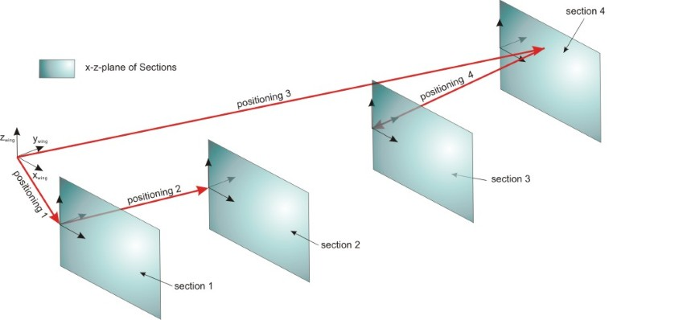

complexType · extension complexBaseType · all
Positioning of the wing section
The positionings describe an additional translation of sections. Basically, the positioning is a vector having the length 'length' and an orientation that is described by the parameters 'sweepAngle' and 'dihedralAngle'. If the 'sweepAngle' and the 'dihedralAngle' are set to zero (or left blank) the positioning vector equals the positive y-axis of the coordinate system (in case of a positive 'length').
If the parameter 'fromSectionUID' is set, the positioning describes the translation between the 'from' towards the 'to' section. If the parameter 'fromSectionUID' is left blank the origin of the positioning vector is the origin of the parent coordinate system.
The origin of the section coordinate system is the position which is described by the positioning vector PLUS the translation which is described in the section.
Please note: If the origin of the positioning vector is defined by using another section, i.e. fromSection is defined, the origin of this vector equals the end of the positioning vector of the previous section. This means that the section translation of the from-section has no influence on the positioning of the to-section. Therefore the total translation, which is described by positionings, is the sum of the current positioning and all positionings that are defined 'before'.
An example for this is given at positioning 3 and 4 at the picture below. Please note, that any other combination of positionings would be possible.
Application of the sweepangle does not lead to a rotation of the section. Application of the dihedral does not lead to a rotation of the section.

| Name | Type | Constraints | Use | Default | Description |
|---|---|---|---|---|---|
@externalDataDirectory | xsd:string | optional | Directory of the external data file | ||
@externalDataNodePath | xsd:string | optional | Path of the node inside the external data file | ||
@externalFileName | xsd:string | optional | Name of the external data file | ||
@uID | xsd:ID | required | UID |
| Name | Type | Constraints | OccurrenceHow often the element may appear at this place. The schema writes it as minOccurs and maxOccurs on the declaration. | Default | Description |
|---|---|---|---|---|---|
| allThe children below may appear in any order. Each may appear at most once. | |||||
name | stringBaseType | [1..1] required | Name | ||
description | stringBaseType | [0..1] optional | Description | ||
length | doubleBaseType | [1..1] required | Distance between inner and outer section (length of the positioning vector) | ||
sweepAngle | doubleBaseType | [1..1] required | Sweepangle between inner and outer section. This angle equals a positive rotation of the positioning vector around the z-axis of the wing coordinate system. | ||
dihedralAngle | doubleBaseType | [1..1] required | Dihedralangle between inner and outer section. This angle equals a positive rotation of the positioning vector around the x-axis of the wing coordinate system. | ||
fromSectionUID | stringUIDBaseType | [0..1] optional | Reference to starting section of the positioning vector. If missing, the positioning is made from the origin of the wing coordinate system. | ||
toSectionUID | stringUIDBaseType | [1..1] required | Reference to ending section (section to be positioned) of the positioning vector | ||
cpacs/vehicles/aircraft/model/ducts/duct/positionings/positioningcpacs/vehicles/aircraft/model/fuselages/fuselage/positionings/positioningcpacs/vehicles/aircraft/model/wings/wing/positionings/positioningcpacs/vehicles/aircraft/model/enginePylons/enginePylon/positionings/positioningcpacs/vehicles/rotorcraft/model/fuselages/fuselage/positionings/positioningcpacs/vehicles/rotorcraft/model/wings/wing/positionings/positioningcpacs/vehicles/rotorcraft/model/rotorBlades/rotorBlade/positionings/positioning| Type | Name |
|---|---|
positioningsType | positioning |